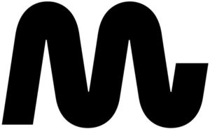

Trade Mark Journal No.2025/016 18 April 2025
WO0000001847189 (9,37,41,42,45)
Office of origin: France
Date of International Registration:28 October 2024
Date of designation in the UK:
28 October 2024

International priority date claimed: 3 May 2024
(France)
(5052284)
- Class 9
- Apparatus and instruments for conducting, switching, transforming, accumulating, regulating or controlling the distribution or use of electricity; breakers (circuit breakers); electric current breakers; electrical circuit breakers; circuit breakers; circuit closers; electric relays; high-voltage apparatus and instruments for conducting, switching, transforming, accumulating, regulating or controlling electricity distribution or consumption; high-voltage power supplies; high-voltage capacitors; high-voltage reactors; high-voltage transformers; high-voltage multipliers; electrical high-voltage stations; electrical control stations for conducting, switching, transforming, accumulating, regulating or controlling electricity distribution or consumption; remote control stations for conducting, switching, transforming, accumulating, regulating or controlling electricity distribution or consumption; electrical stations for conducting, switching, transforming, accumulating, regulating or controlling electricity distribution or consumption; electrical high-voltage control stations for conducting, switching, transforming, accumulating, regulating or controlling electricity distribution or consumption; electrical high-voltage stations for conducting, switching, transforming, accumulating, regulating or controlling electricity distribution or consumption.
- Class 37
- Installation, maintenance and repair of electrical equipment and apparatus; installation, maintenance and repair of electricity-operated installations; installation, maintenance and repair of electricity generators; installation, maintenance and repair of high-voltage electrical apparatus and instruments; installation, maintenance and repair of high-voltage electrical installations; installation, maintenance and repair of electrical high-voltage control stations for conducting, switching, transforming, accumulating, regulating or controlling electricity distribution or consumption; installation, maintenance and repair of high-voltage power stations for conducting, switching, transforming, accumulating, regulating or controlling electricity distribution or consumption; services provided by electricians; provision of information relating to installation, maintenance and repair of electrical apparatus, electrical equipment and electrical installations; installation, maintenance and repair of high-voltage and low-voltage electrical and electrotechnical equipment supplying electricity to industrial sites; installation, maintenance and repair of apparatus for generating electricity and energy installations; information and advice with respect to installation, maintenance and repair of electrical and electrotechnical high-voltage and low-voltage equipment supplying electricity to industrial sites; interference suppression in electrical installations; information with respect to repair, installation and maintenance of electricity generating apparatus and energy installations for industrial and tertiary sites; construction, maintenance and repair of installations for providing, producing and/or distributing electricity.
- Class 41
- Education; training; education and training services; organization of exhibitions for cultural or educational purposes; organization and conducting of colloquiums, conferences, congresses, training workshops, coaching workshops, seminars and symposiums; provision of non-downloadable electronic publications online; education services for adults; organization of competitions (education or entertainment); training services by means of simulators; organization and conducting of non-virtual educational forums; provision of non-downloadable videos online; electronic publication of books, magazines, periodicals, texts (other than advertising texts) and works.
- Class 42
- Scientific and technological services as well as research and design services relating thereto; industrial analysis, industrial research and industrial design services; quality control and authentication services; energy auditing; advice with respect to energy saving; calibration (measuring); rental of meters for energy consumption reading; conducting of technical project studies; surveying (engineering work); engineering; technological consultancy services; design of electrical systems; technical design and development of power plants; development of electric wire testing apparatus; scientific and industrial research in the field of electricity; engineering services relating to the generation of electricity; technological analysis relating to the energy and electricity needs of third parties; research in the field of high-voltage electricity technology; consultancy with respect to technological services provided by engineers in the field of electricity and energy supply; research and development services with respect to electrical apparatus, electrical equipment, electrical installations, electrical high-voltage apparatus, electrical high-voltage equipment and electrical high-voltage installations; research and development services with respect to electrical high-voltage control stations and electrical high-voltage stations; research and development services with respect to technology and solutions for conducting, switching, transforming, accumulating, regulating or controlling the distribution or consumption of electricity and high-voltage electricity; technical information and advice on installations for providing, producing and/or distributing energy, namely electricity; diagnostics (carried out by engineers) for implantation and installation of apparatus and installations for providing, producing and/or distributing electricity; research and expertise (engineering work) in the fields of energy; technical information and advice relating to energy as well as its management and operation; technical evaluation and appraisal of energy consumption; technical advice and information on electrical and electrotechnical high-voltage and low-voltage equipment supplying electricity to industrial sites; quality control services for electrical installations.
- Class 45
- Inspection services on behalf of third parties with respect to safety; inspection of electrical apparatus, electrical equipment, electrical installations, electrical high-voltage apparatus, electrical high-voltage equipment, electrical high-voltage installations, electrical high-voltage control stations and electrical high-voltage stations for third parties in the field of safety; security services for protection of property and individuals; risk assessment services with respect to safety; risk assessment services with respect to safety, namely electrical apparatus, electrical equipment, electrical installations, electrical high-voltage apparatus, electrical high-voltage equipment, electrical high-voltage installations, electrical high-voltage control stations and electrical high-voltage stations; inspection of electrical and electrotechnical high-voltage and low-voltage equipment supplying electricity to industrial sites with respect to safety; rental of safety equipment and safety surveillance equipment other than safety drones and surveillance drones.
MG Holding
Representative: Monsieur PIRASTRU Léonard BRINGER IP, 1 Place du Président Thomas Wilson, F-31000 TOULOUSE, FRANCE